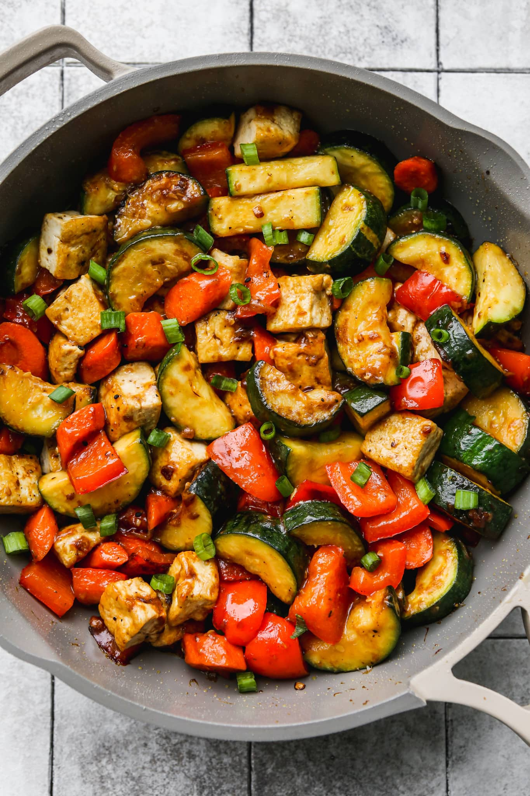

Tofu zucchini fry

Description
As a dietitian, stir fries are one of my favourite ways to pack in a ton of nutrients in one pan. This stir fry with zucchini is filled will
fiber-rich veggies, quality protein, and healthy fats.
Like many of my recipes, this one can easily be modified based on what you have on hands or different veggies/proteins that you enjoy.
I’ve included a bunch of recipe modification ideas for you, as well as tips for cooking zucchini, and ideas for what to serve it with. Enjoy!
Ingredients
- cooking oil or spray – I love using avocado oil spray for this
- zucchini
- bell pepper
- carrots – feel free to swap carrots + bell peppers for other veggies, like broccoli, mushrooms, snap peas, eggplant, spinach, etc!
- shallot – or you can swap with onion
- garlic
- tofu (firm or extra firm) – if you’d prefer to serve this with another protein, you can use shrimp, chicken, or beef
- toasted sesame oil
- soy sauce or tamari
- ginger (ground or fresh)
- rice wine vinegar
- cornstarch – or other thickening starch, like arrowroot powder
- optional: green onions (to garnish)
Instructions
-
Prep Tofu: Drain tofu and wrap with a paper towel. Gently squeeze to remove excess liquid, then place under something heavy
(like a couple cookbooks) while you prep the veggies and sauce.
-
Mix cornstarch with 2 teaspoons of water in a small ramekin, until a slurry forms. Then, make the sauce by whisking all sauce ingredients
(including the cornstarch slurry) in a small bowl. Set aside.
- Unwrap tofu from paper towel and cut into cubes of desired size.
-
Heat cooking spray in a large pan over medium-high heat. When pan is hot, add tofu and season with salt + pepper. Cook for 5 minutes,
undisturbed. Then flip each piece and cook for an additional 5 minutes, finishing with a quick toss of the pan at the end. Remove and set tofu
aside in a clean bowl.
- In the same pan, cook shallots and garlic for a couple minutes until lightly browned and fragrant
-
Then, add chopped zucchini, carrots, and bell peppers to the pan. Cook for 10-12 minutes, stirring occasionally. TIP: you can add additional
cooking oil or spray as needed here.
Do not salt veggies yet, to prevent zucchini from getting soggy!
-
Once veggies are mostly cooked, add tofu back in along with sauce. Toss together and cook for an additional 3 minutes. The sauce should
thicken slightly and coat everything.
-
Serve stir fry on its own or over some cooked grains or noodles (see notes for ideas). Add garnish as desired and season with additional salt
+ pepper, if needed. Enjoy hot!